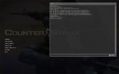

Vous avez toujours voulu modifier le menu officiel de Counter-Strike: Source en y modifiant les lignes ou en a créant d'autres ? Vous avez toujours aimé avoir un raccourci simple de la console de jeu sur votre menu et qu'elle se lance parfaitement ? Alors... Lisez la suite !
Pour commencer, nous avons besoin du fichier GameMenu.res qui ne se trouve que dans l'archive du jeu. Mais vu que je suis bon, je vous donne le fichier en citation ici même ! :D
Alors ! Les lignes suivantes se sont les lignes par défaut du fichier GameMenu.res de Counter-Strike: Source. Sélectionnez toutes les lignes de la citation, copiez-les et collez-les dans un éditeur de texte (Ex. Bloc-notes) et enregistrez le fichier sous le nom : GameMenu.res, dans le répertoire : C:/Program Files/Steam/steamapps/*compte*/counter-strike source/cstrike/resource/
Ce que vous devez comprendre c'est que vous ne devez pas effacer un seul guillemet " ou accolade { et également ne pas toucher aux variables telles que label, command, onlyingame, sous peine de voir une ligne défectueuse >_ .
Alors, voilà ce que vous pouvez changer :
Commande
Signification
Exemple
Note
"1"
C'est la position de la ligne. Bien s'assurer qu'ils sont tous en ordre et qu'ils ne se répètent pas 2 fois. Par exemple, 2 fois le numéro "6".
N/A
N/A
"label"
C'est le texte qui apparaîtra sur la ligne.
"label" "#GameUI_GameMenu_FindServers", le #GameUI_GameMenu_FindServers est la valeur à modifier.</couleur>
Le titre #GameUI_GameMenu_FindServers peut être remplacé par Search Server, par exemple, si vous n'aimiez pas le titre donné par Valve.
"command"
C'est la commande qui sera exécutée.
"command" "Disconnect", le Disconnect est la valeur à modifier.
N/A
"OnlyInGame"
Ceci activera la ligne du menu seulement durant une partie, le 0 désactivera la ligne.
"OnlyInGame" "1", le 1 est la valeur à modifier.
Tant qu'à mettre 0, effacez la commande.
"notsingle"
Ceci permet de ne rien voir tant que le joueur n'est pas dans le jeu.
"notsingle" "1", le 1 est la valeur à modifier.
Autrement dit, on ne voit pas le "Loading..." d'une connexion à un serveur.
Signification des titres #GameUI_GameMenu_
Maintenant voici ce que veulent dire les textes des labels. Par exemple ceci #GameUI_GameMenu_ResumeGame est une entité qui qui affichera un texte en fonction de la langue de l'utilisateur. Ainsi il n'y a pas besoin de faire plusieurs menus différents pour chaque langue, il suffit de donner une signification à cette entité.
Remarquez que le numéro de la ligne est "5". Assurez-vous de copier ce code et de le coller au bon endroit dans le fichier GameMenu.res après le } du code de la ligne "4". On le met à la position 5, vu que les numéros au-dessus de celui-ci (1, 2, 3, 4 (4 étant un saut de ligne)) n'apparaissent que lors d'une partie. Alors que l'on veut voir cette ligne directement au menu principal. Donc, rappelez-vous que si vous voulez afficher une ligne sur le menu principal, on commence au numéro 5. ;)
Maintenant, nous allons passer aux commandes spéciales ! ^^
Note : Il est important de laisser le echo (avec l'espace) pour que la console s'ouvre. Vous pouvez, par contre, rajouter du texte après le echo. Exemple : echo CONSOLE ENABLED
Note : La commande pour joindre le serveur est ["engine connect 64.15.62.140:27015"] et l'adresse IP [64.15.62.140:27015] est l'adresse du serveur que vous désirez rejoindre. L'adresse dans l'exemple ne correspond à aucun serveur existant.
Note : J'ai mis deux options 3 et 0. Ainsi à chaque fois qu'on clique sur la ligne une nouvelle commande se passe. 3 = fps en affichage graphique avec d'autres options, 0 = off. Vous pouvez mettre plusieurs options pour une commande comme celle-ci.
Si vous ne désirez pas afficher les FPS en graphique, vous pouvez prendre la 2ième option ci-dessous.
Note : J'ai mis deux options 2 et 0. Ainsi à chaque fois qu'on clique sur la ligne une nouvelle commande se passe. 2 = fps détaillés dans le coin de l'écran, 1 = fps seulement dans le coin de l'écran, 0 = off.
Note : Sachant que par défaut la commande est toujours à 0 (Off) à chaque démarrage du jeu, il ne sert à rien d'ouvrir la console pour y taper la commande pour savoir si elle est activée. On gagne un peu plus de temps à activer la commande par le menu que par la console. Vous pouvez mettre toute autre commande que sv_cheats.
Multi-Session / Multi-Pseudo :magicien:
Vous êtes plusieurs personnes à utiliser un même compte Steam et vous vous êtes lassés de toujours modifier les configurations de celui qui est passé juste avant vous sur le jeu pour mettre les vôtres ? Voici la solution miracle !
Note : Encore une fois on a plusieurs valeurs Fred, Pamela et Alex et à chaque clic sur un des trois menus la configuration d'un des comptes s'appliquera. Mais comment tout ceci prendra-t-il effet ? Voici comment !
Puis, on doit s'assurer que vous pourrez modifier le type d'extension des fichiers. Il faut se rendre dans les Options des dossiers pour faire cela.
Puis vous allez créer trois fichiers texte avec l'extension .cfg. Faites Fichier > Nouveau > Document Texte (x3 fois, pour l'exemple) Renommez ensuite les fichiers texte selon le nom de chaque joueur qui joue au jeu :
fred.cfg
pamy.cfg
alex.cfg
Ensuite ouvrez chacun des 3 fichiers, un à la fois, pour y inclure les commandes de console qui diffèrent d'un compte à l'autre. Comme le pseudo du joueur par exemple. Les autres commandes classiques iront dans le fichier config.cfg ou autoexec.cfg.
Voici des commandes personnelles qui peuvent changer d'une personne à l'autre:
Name "Nom du joueur" (pseudo du joueur)
cl_crosshairscale "2500" (petite mire, aide à faire des headshots)
sensitivity "2.5" (sensibilité de la souris)
cl_logofile "materials/vgui/logos/Spray_Tag.vtf" (Tag perso du joueur)
bind "Key" "commande" (éditer une touche du clavier/souris qui diffère d'un joueur à l'autre)
Enregistrez tous les fichiers et vous êtes prèt à jouer !
Vous vous trouvez dans la partie du cours où vous pouvez vous procurer le fichier qui modifie le menu du jeu en y incluant (seulement) la console.
Pour se faire, copiez et collez le code ci-dessous dans un éditeur de texte (ex. Bloc-notes) et enregistrer le fichier sous le nom de : GameMenu.res dans le répertoire : C:/Program Files/Steam/steamapps/*compte*/counter-strike source/cstrike/resource/
{kind=link}